이전까지의 구현 현황을 잠깐 요약하자면,
[1스테이지: 도시 상공]에서 시작해서 점차 우주로 향하는 컨셉이기 때문에
3스테이지쯤부터는 지구 성층권에서 우주로 올라가는 자연스러운 흐름을 보여주고 싶었습니다.
그래서 약 한 달 가까이를 열심히 우주에서 본 지구 수평선을 좀 그려서 묘사해볼까 했지만...
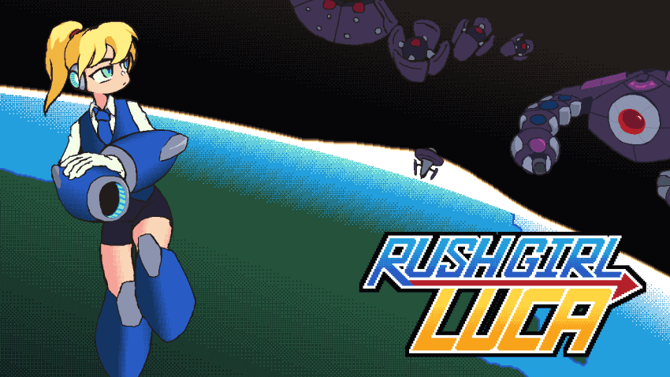
이건 도저히 제 그림 실력으로 해결이 가능한 영역이... 아닙니다...
결국 코드 단계에서 절차적 생성으로 연출해내야겠다는 생각을 했습니다.
장면 연출과 관련된 작업이니 인쇄해둔 스토리보드 시트를 꺼내 카페를 다녀옵니다.
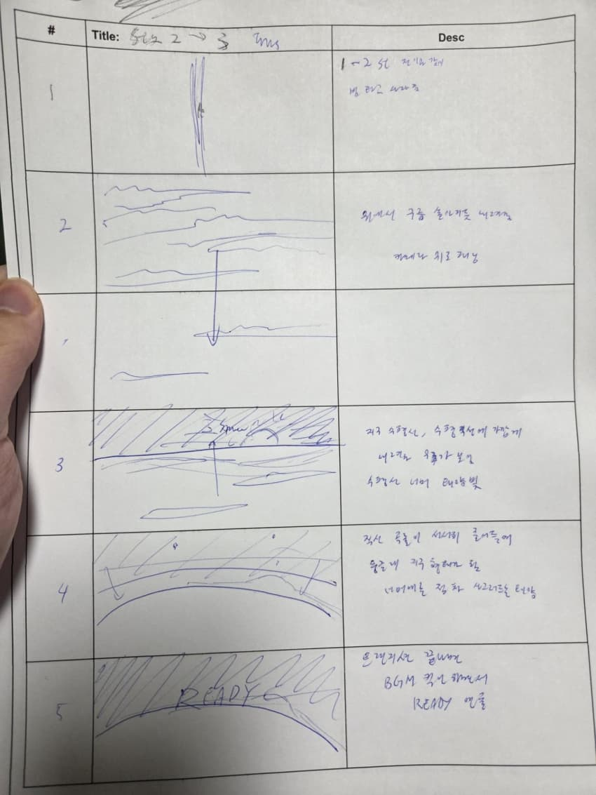
작업한지 좀 오래되어서 종이가 꼬질꼬질해졌네요.
비록 지금은 프로그래밍을 클로드코드에 맡기고는 있지만
나름 플머 현업 경험이 있던 덕분인지 스토리보드에 대한 대략적인 로직 가코딩은 가능했습니다.
구체적인 구간별 지속 시간과 초당 곡률 변화량 정도만 미리 잡아주었습니다.
이렇게 해서 맡기면 의도했던 연출에서 크게 벗어나는 일이 없어 즐겨 쓰는 루틴입니다.
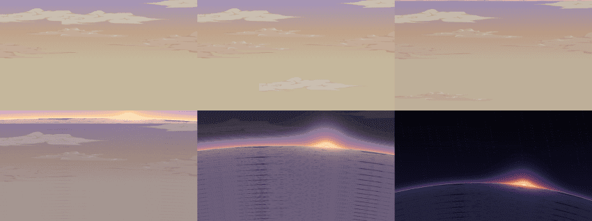
수평선 너머로 저무는 태양과 멀어지면서 곡률이 늘어나는 수평선을 연출해보는 과정입니다.
중간 과정에서 우주 공간에 반투명한 구름이 남아있거나 구름이 잘려있거나
지구 영역에 구름이 마구 패턴화 되어서 어색한 부분이 보여 아쉽네요.
우주 공간도 너무 허전해보입니다.
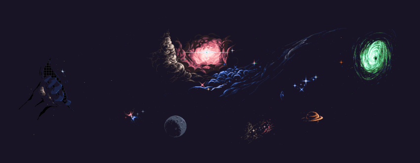
우주 그림의 경우에는 옛날에 그려둔 우주 배경이 있으니 여기에서 가장 괜찮아보이는 부분을 도트로 패턴화하면 되겠습니다.
중앙 기준 점대칭으로 (-1, n-1) , (0, n^2) , (1, n-1) 이 패턴만 유지하면서 0도와 45도 두 가지와 n=1,2 두 종류면 적당할 것 같습니다
역시 도트는 수치화해서 인지하기 쉽다는게 기분이 좋네요.
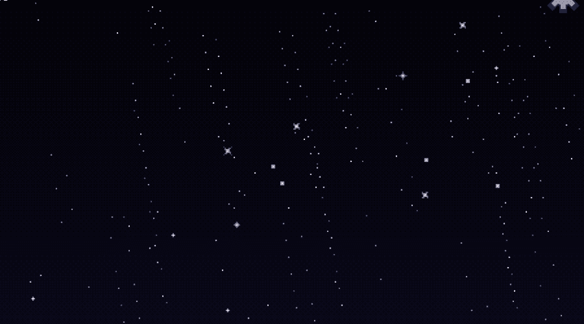
나쁘지 않네요. 여기서 사선으로 배치된 미묘한 점들만 좀 조정하면 되겠습니다.
다음은 트랜지션쪽을 손봐야겠습니다.
우주쪽 구름 잔여 현상이랑 너무 패턴처럼 보이는 구름만 손보면 됩니다.
여전히 구름이 좀 과한가 싶긴 한데 그래도 지저분했던 패턴보다는 나은 것 같습니다.
지구쪽에 스텐실 달아서 구름을 지구 안에 가두는 것도 괜찮았네요.
지구쪽에 아직 바다와 육지 구분이 따로 없던 건 여전히 아쉬운 부분이긴 한데... 이건 그냥 쿨하게 포기할까 합니다.
처음부터 하나하나 전부 신경쓰기 시작했다가는 제 체력과 시간이 부족해질 것이기 때문에
추후 폴리싱 단계로 미뤄둡니다.
아마 바다/육지 구분 연출을 넣어야 할 시점에는 제대로 지도를 그려서 넣어야겠습니다.
이제 이어서는 보스와 드론 몹들을 제작합니다.
1스테이지는 근접 접근,
2스테이지는 투사체 패턴,
3스테이지는 레이저 빔 패턴 으로 사전에 정해두었기 때문에
그런 포인트만 염두에 두고 며칠정도 수첩을 소지한 채 개인 일정을 소화합니다.
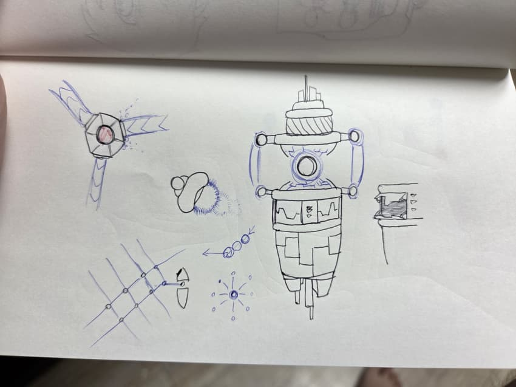
그러다 보면 뭐라도 나오는 법이죠.
대중교통을 이용하거나 운동하는 와중에도 계속 수첩을 펴두며 생각합니다.
이번에도 거의 한달 가까이 머리속으로 생각을 굴리다가
가장 최근에 카페에 앉아서 남겼던 메모 낙서로 작업을 시작합니다.
각 스테이지의 보스들은 다음 스테이지의 기믹을 맛보기로 보여주도록 설계하고 있습니다.
3스테이지가 레이저고, 4스테이지는 멀티파츠, 군집형 몹을 생각하고 있기 때문에
레이저를 메인으로 쓰면서 뭔가 추가 몹을 사출하거나 다중 파츠로 약점을 보호하는 느낌을 생각했습니다.
위는 보스 패턴과 관련된 기믹을 요약해둔 낙서입니다.
아래에 실제 구현된 내용과 연결됩니다.
생각해둔 패턴은 코어에서 쏜 빔이 빔 분배기를 거치면 그물처럼 퍼져나가는 것이 하나
레이저 구체 다발이 뱀처럼 뻗어나가며 추적하는 것 하나와
투사체를 흩뿌리며 폭발하는 구체 하나 해서
총 3개를 생각해두고 있습니다.
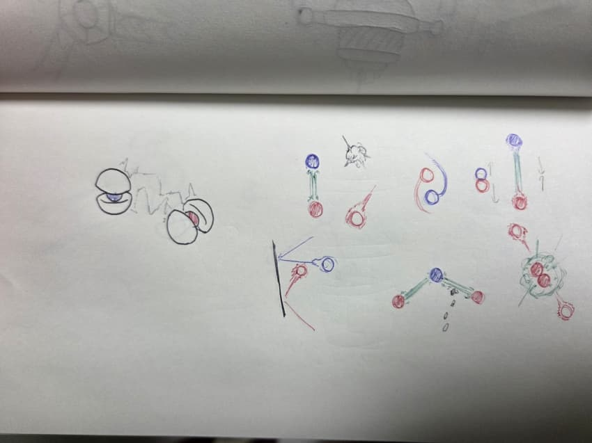
이쪽은 +극과 -극으로 이루어져 빔을 연결시킨 쌍둥이 몹입니다.
다른 극끼리는 레이저를 이어주고, 같은 극끼리는 폭발하며 튕겨나갑니다.
어디서 본 적이 있었나... 하고 생각해보니 메탈슬러그7 미션5에서 경험한게 무의식중에 튀어나왔었습니다.
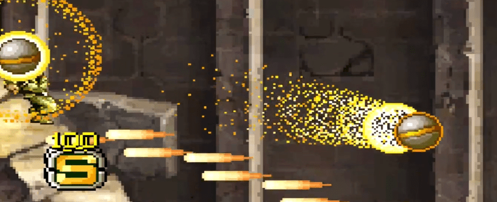
이렇게 생겼던...
근데 그 사실을 작업하고 거의 일주일쯤 지나서야 깨달았습니다. 무의식이란 참 무서운 것이군요.
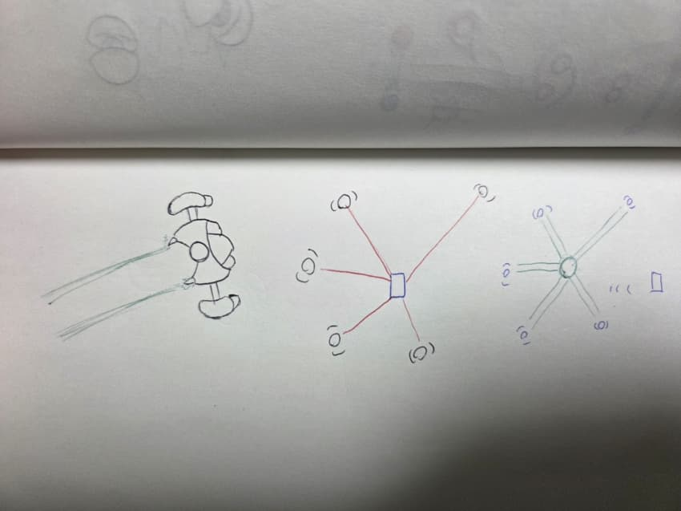
이쪽은 단순히 단발성 레이저 빔을 차지해서 쏘는 심플한 적입니다.
다만, 2스테이지를 만들면서 느꼈던 것인데
심플한 패턴의 몹을 다수 배치시키기만 해서는 오히려 좀처럼 대처하기 어렵다는 점이었습니다.
처음에는 그냥 빔을 조준했다가 쏘는 정도로만 생각했지만
그래서는 초당 2-3회씩 끊임없이 쏟아지는 레이저를 마주하게 될 것이 뻔했습니다.
아예 모든 빔 유닛이 동시에 조준해서 일제사격한다면
시각적인 압박감이 더 커지는 것에 비해 실질 난이도는 훨씬 줄어들 것이라고 생각했습니다.
평소에 항상 캐릭터 애니메이팅이나 캐릭터 디자인에다가만 시간을 쏟아왔기 때문에
메카닉이나 배경쪽에는 상당히 디자인이 취약한 모습입니다.
다만 개발에 있어서 그릴 수 있는 그래픽 리소스는 반드시 그린다고 원칙을 정해두었기 때문에
못그리면 못그린 대로 그냥 넣으려고 합니다.
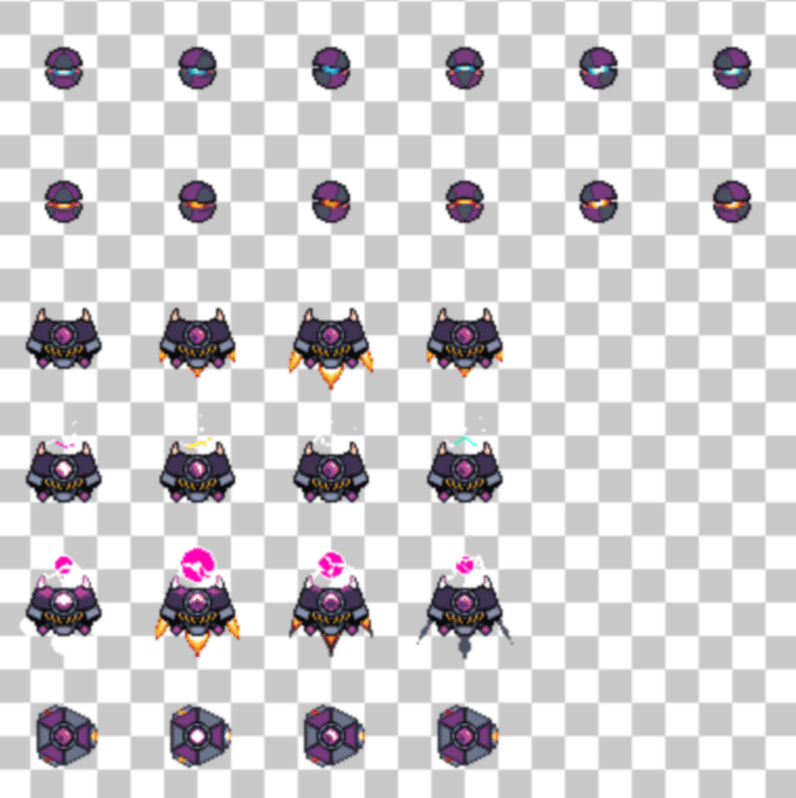
음... 플레이어 분들이 디자인만 보고 다른 몹이라고 인지할 수 있을지 걱정이 됩니다.
레이저 저격 타입 적은 디자인 단계에서 프로토스 인터셉터마냥 날개를 달아놨었는데
그리는 과정에서 모티브를 좀 더 전기충격기에 가깝게 바꾸게 되었습니다.
차라리 날개를 남겨둘까 했지만... 제가 판단하려고 해봐야 객관적인 판단이 안될 것 같아서 그대로 두려고 합니다.
이 이상은 인게임 패턴으로 확실하게 구분될 수 있도록 행동을 보여주는게 나을지도 모르겠습니다.
아래의 구현된 패턴들은 위에 그려둔 러프와 번갈아 보시면 재밌으실 것 같습니다.
만들다보니 왠지 크래시밴디쿳:Warped 의 최종보스 패턴이나 Just Shapes and Beats도 생각이 나네요.
빙글빙글 돌다가 어느 방향으로 뻗어나갈지 알기 어려우면서도
확실하게 경로를 막고있다는 압박감을 주는게 퍽 마음에 듭니다.
연결은 한 쪽만 파괴해도 없어지니 공략법도 무난합니다.
확실히 일제사격쪽이 난이도가 훨씬 낮아지긴 하네요.
2스테이지의 투사체 저격 패턴과 너무 비슷해보이기도 하고
맵에 빨간 경고선이 너무 많이 보여도 굉장히 보기 불편해보일테니
각 라운드별로 어떻게 분배할지... 생각을 잘 해봐야겠습니다.
그것 외엔... 빔을 쏘는 순간에 좀 더 짧고 강하게 임팩트를 주는게 좋을 것 같아보이네요.
보스쪽은 워낙 큰 덩치로 작업할 생각이라 그래픽과 별개로 패턴 먼저 작업할 계획입니다.
원화를 보여주고 대충 임시 도형으로 때워달라고 했더니 뭔가... 미묘한 녀석이 나왔네요.
패턴 자체는 당장에 보기에는 나쁘지 않은 것 같습니다.
이 이상은 그래픽이 나와봐야 알 수 있을 것 같습니다.
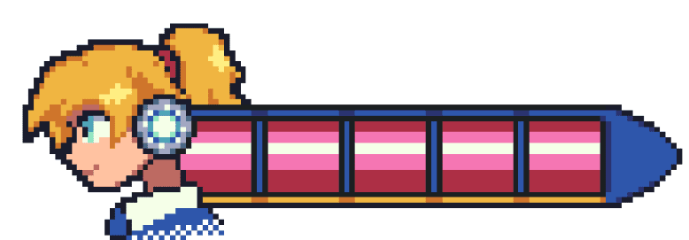
작업하는 과정에서 겸사겸사 체력 바도 다시 작업해두었습니다.
이전에 코미버스에서 전시했을 때에는 체력바 비쥬얼이 워낙 처참했었거든요(...)
이렇게 보니 그냥 록맨시리즈처럼 루카의 L 하나만 넣어둘껄 그랬나 싶기도...
아무래도 UI/UX쪽은 항상 난관인 것 같습니다.
초반부터 확실하게 가닥을 잡고 만들어나갈 수 있다면 참 좋을텐데...
여러번 직접 게임에 넣어보면서 다듬어보지 않고서는 좋은 UI가 나오지 않는다는 점이 슬픕니다.
앞으로 얼마나 더 많은 게임을 만들어봐야 실력이 늘지...
하루 한두시간씩 틈틈히 작업해서 보스 리소스를 작업했습니다.
뭔가 우주에서 거대한 레이저 빔포도 쏘고 드론 중계기 역할도 하면서 자체 생산 공장 역할도 하는 보스 이미지를 생각했습니다.
다른 부분 보다도 드론 사출구 해치쪽에 최대한 정성을 들였는데, 딱 그 부분만 마음에 드네요.
일단 이 상태에서 게임에 넣어두고 세세한 명암이나 등등은 이후에 폴리싱 해볼 예정입니다.
이제 게임에 넣어볼 시간이네요.
음... 보스 패턴이... 생각보다 슴슴하게 느껴지네요.
2스테이지 보스에 비해 많이 슴슴하게 느껴졌습니다. (2스테이지 보스가 과하게 빡셌던걸지도)
물론 개발자의 느낌이기 때문에 제게 쉽다고 느껴지는 건 크게 의미 없긴 하지만요.
원래 기획 단계에서 약점 코어를 배리어가 가리고 있는 기믹이 있었다가
중간에 한 번 뺐었단 말이죠?
근데 생각보다 어렵다는 느낌이 전혀 들지 않아서 다시 추가하게 되었습니다.
해치가 열리거나 빔을 모으거나 할 때에도 효과음을 새로 충분히 넣어줘야 할 것 같습니다.
앞으로도 꾸준히 업데이트 남겨보겠습니다.
==== 여기까지가 현 상황 ====
뭔가 기믹 자체를 아예 재설계하기보다는 약간씩 조정해보는 쪽을 먼저 해보려고 합니다.
빔 분배기가 각 위치에 배치되기 전까지는 피격 판정이 없다던지... 체력을 더 많이 배치한다던지...
패턴 선딜레이도 좀 더 줄여보던가 해야겠습니다.
솔직히 개인적으로는 짧은 보스전에 비해 생각보다 체력을 엄청나게 빼앗기기 쉬운 보스로 만들고 싶었습니다.
그런 느낌이 되어갈 수 있도록 열심히 밸런싱해봐야겠네요.
현재 스팀에 무료데모는 2스테이지까지만 공개가 되어있기 때문에
3스테이지부터는 어떻게 테스터를 구해야 할지 막막하기도 합니다.
4-5스테이지도 마찬가지로 원화와 패턴 디자인이 준비가 이미 되어있어서
내년 1월 말 출시까지 일정을 어떻게든 맞출수는 있을 것 같지만
그 사이에 다른 일정들도 엄청나게 쌓여있어서 살짝 절망중입니다.
러쉬걸 루카와 동시에 한국 픽셀아트 온리전 <점집> 2회차도 개최될 예정입니다.
이곳에 계신 많은 도트게임 개발자분들께서도 관심이 있으시다면
꼭 참가를 고려해주시면 감사하겠습니다 (추후 공지 올려볼께요!)
그냥 작업 결과물만 올리는게 나았을지, 지금처럼 과정도 같이 보여드리는게 나은지 모르겠습니다.
그래도 혹시 모르니 지금처럼 작업 과정은 다 보존해두고 있습니다
여기까지 긴 글 읽어주셔서 감사합니다!
모두들 행복한 개발 되시길 바랍니다.
댓글
수집 당시 댓글 15개
ㅇㅇ · 11.07 22:21:28
팦핑구미 · 11.07 22:25:26
MeNe · 11.07 22:29:00
엔록 · 11.07 22:29:05
스퀘어고먐미 · 11.07 22:31:38
qp209j48f · 11.07 22:41:34
· 마른비 · 11.07 22:55:44
· qp209j48f · 11.07 23:55:27
볼렌더 · 11.07 22:50:09
Gaemat · 11.07 23:25:26
가갸거겨고교구규그기513 · 11.07 23:56:27
Indie1 · 11.08 01:03:39
땨뗘(봇) · 11.09 10:26:17
ㅇㅇ · 11.09 10:47:27
키나루디안마기 · 11.09 12:28:09